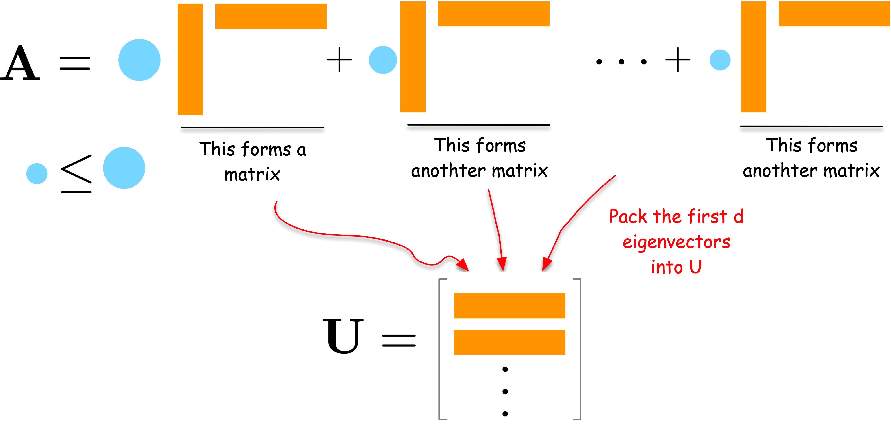

:tags: [hide-input]
import numpy as np
import networkx as nx
import matplotlib.pyplot as plt
import seaborn as sns
# Create a small example network
G = nx.karate_club_graph()
A = nx.adjacency_matrix(G).toarray()
labels = np.unique([d[1]['club'] for d in G.nodes(data=True)], return_inverse=True)[1]
cmap = sns.color_palette()
nx.draw(G, with_labels=False, node_color=[cmap[i] for i in labels])Embedding Methods: Implementation and Practice
1 Spectral Embedding
Network Compression Approach
Networks are a high-dimensional discrete data that can be difficult to analyze with traditional machine learning methods that assume continuous and smooth data. Spectral embedding is a technique to embed networks into low-dimensional spaces.
Let us approach the spectral embedding from the perspective of network compression. Suppose we have an adjacency matrix \mathbf{A} of a network. The adjacency matrix is a high-dimensional data, i.e., a matrix has size N \times N for a network of N nodes. We want to compress it into a lower-dimensional matrix \mathbf{U} of size N \times d for a user-defined small integer d < N. A good \mathbf{U} should preserve the network structure and thus can reconstruct the original data \mathbf{A} as closely as possible. This leads to the following optimization problem:
\min_{\mathbf{U}} J(\mathbf{U}),\quad J(\mathbf{U}) = \| \mathbf{A} - \mathbf{U}\mathbf{U}^\top \|_F^2
where:
- \mathbf{U}\mathbf{U}^\top is the outer product of \mathbf{U} and represents the reconstructed network.
- \|\cdot\|_F is the Frobenius norm, which is the sum of the squares of the elements in the matrix.
- J(\mathbf{U}) is the loss function that measures the difference between the original network \mathbf{A} and the reconstructed network \mathbf{U}\mathbf{U}^\top.
By minimizing the Frobenius norm with respect to \mathbf{U}, we obtain the best low-dimensional embedding of the network.
An Intuitive Solution
Let us first understand the solution intuitively. Consider the spectral decomposition of \mathbf{A}:
\mathbf{A} = \sum_{i=1}^N \lambda_i \mathbf{u}_i \mathbf{u}_i^\top
where \lambda_i are weights and \mathbf{u}_i are column vectors. Each term \lambda_i \mathbf{u}_i \mathbf{u}_i^\top is a rank-one matrix that captures a part of the network’s structure. The larger the weight \lambda_i, the more important that term is in describing the network.
To compress the network, we can select the d terms with the largest weights \lambda_i. By combining the corresponding \mathbf{u}_i vectors into a matrix \mathbf{U}, we obtain a good low-dimensional embedding of the network.

For a formal proof, please refer to the Appendix section.
Example: Spectral Embedding
Let us demonstrate the results with a simple example as follows.
:tags: [hide-input]
# Compute the spectral decomposition
eigvals, eigvecs = np.linalg.eig(A)
# Find the top d eigenvectors
d = 2
sorted_indices = np.argsort(eigvals)[::-1][:d]
eigvals = eigvals[sorted_indices]
eigvecs = eigvecs[:, sorted_indices]
# Plot the results
import seaborn as sns
fig, ax = plt.subplots(figsize=(7, 5))
sns.scatterplot(x = eigvecs[:, 0], y = eigvecs[:, 1], hue=labels, ax=ax)
ax.set_title('Spectral Embedding')
ax.set_xlabel('Eigenvector 1')
ax.set_ylabel('Eigenvector 2')
plt.show()Interestingly, the first eigenvector corresponds to the eigen centrality of the network, representing the centrality of the nodes. The second eigenvector captures the community structure of the network, clearly separating the two communities in the network.
Modularity Embedding
In a similar vein, we can use the modularity matrix to generate a low-dimensional embedding of the network. Namely, let us define the modularity matrix \mathbf{Q} as follows:
Q_{ij} = \frac{1}{2m}A_{ij} - \frac{k_i k_j}{4m^2}
where k_i is the degree of node i, and m is the number of edges in the network.
We then compute the eigenvectors of \mathbf{Q} and use them to embed the network into a low-dimensional space just as we did for the adjacency matrix.
:tags: [hide-input]
deg = np.sum(A, axis=1)
m = np.sum(deg) / 2
Q = A - np.outer(deg, deg) / (2 * m)
Q/= 2*m
eigvals, eigvecs = np.linalg.eig(Q)
# Sort the eigenvalues and eigenvectors
sorted_indices = np.argsort(-eigvals)[:d] # Exclude the first eigenvector
eigvals = eigvals[sorted_indices]
eigvecs = eigvecs[:, sorted_indices]
fig, ax = plt.subplots(figsize=(7, 5))
sns.scatterplot(x = eigvecs[:, 0], y = eigvecs[:, 1], hue=labels, ax=ax)
ax.set_title('Modularity Embedding')
ax.set_xlabel('Eigenvector 1')
ax.set_ylabel('Eigenvector 2')
plt.show()The modularity embedding can be used to bipartition the network into two communities using a simple algorithm: group nodes with the same sign of the second eigenvector {footcite}`newman2006modularity`.Laplacian Eigenmap
Laplacian Eigenmap {footcite}belkin2003laplacian is another approach to compress a network into a low-dimensional space. The fundamental idea behind this method is to position connected nodes close to each other in the low-dimensional space. This approach leads to the following optimization problem:
\min_{\mathbf{U}} J_{LE}(\mathbf{U}),\quad J_{LE}(\mathbf{U}) = \frac{1}{2}\sum_{i,j} A_{ij} \| u_i - u_j \|^2
In this equation, \| u_i - u_j \|^2 represents the squared distance between nodes i and j in the low-dimensional space. The goal is to minimize this distance for connected nodes (where A_{ij} = 1). The factor \frac{1}{2} is included for mathematical convenience in later calculations.
To solve this optimization problem, we rewrite J_{LE}(\mathbf{U}) as follows:
\begin{aligned} J_{LE}(\mathbf{U}) &= \frac{1}{2}\sum_{i}\sum_{j} A_{ij} \| u_i - u_j \|^2 \\ &= \frac{1}{2}\sum_{i}\sum_{j} A_{ij} \left( \| u_i \|^2 - 2 u_i^\top u_j + \| u_j \|^2 \right) \\ &= \sum_{i}\sum_{j} A_{ij} \| u_i \|^2 - \sum_{i}\sum_{j} A_{ij} u_i^\top u_j\\ &= \sum_{i} k_i \| u_i \|^2 - \sum_{i,j} A_{ij} u_i^\top u_j\\ &= \sum_{i,j} L_{ij} u_i^\top u_j \end{aligned}
where
L_{ij} = \begin{cases} k_i & \text{if } i = j \\ -A_{ij} & \text{if } i \neq j \end{cases}
The minimization problem can be rewritten as:
J_{LE}(\mathbf{U}) = \text{Tr}(\mathbf{U}^\top \mathbf{L} \mathbf{U})
where
\mathbf{U} = \begin{bmatrix} \mathbf{u}_1 ^\top \\ \mathbf{u}_2 ^\top \\ \vdots \\ \mathbf{u}_N ^\top \\ \end{bmatrix}
See the Appendix section for the detailed derivation.
By taking the derivative of J_{LE}(\mathbf{U}) with respect to \mathbf{U} and set it to zero, we obtain the following equation:
\frac{\partial J_{LE}}{\partial \mathbf{U}} = 0 \implies \mathbf{L} \mathbf{U} = \lambda \mathbf{U}
The solution is the d eigenvectors associated with the d smallest eigenvalues of \mathbf{L}.
It is important to note that the eigenvector corresponding to the smallest eigenvalue (which is always zero for connected graphs) is trivial - it’s the all-one vector. Therefore, in practice, we typically compute the d+1 smallest eigenvectors and discard the one corresponding to the zero eigenvalue.
Example: Laplacian Eigenmap
Let us first compute the Laplacian matrix and its eigenvectors.
:tags: [hide-input]
D = np.diag(np.sum(A, axis=1))
L = D - A
eigvals, eigvecs = np.linalg.eig(L)
# Sort the eigenvalues and eigenvectors
sorted_indices = np.argsort(eigvals)[1:d+1] # Exclude the first eigenvector
eigvals = eigvals[sorted_indices]
eigvecs = eigvecs[:, sorted_indices]The eigenvectors corresponding to the d smallest eigenvalues are:
:tags: [hide-input]
fig, ax = plt.subplots(figsize=(7, 5))
sns.scatterplot(x = eigvecs[:, 0], y = eigvecs[:, 1], hue=labels, ax=ax)
ax.set_title('Laplacian Eigenmap')
ax.set_xlabel('Eigenvector 2')
ax.set_ylabel('Eigenvector 3')
plt.show()2 Neural Embedding with word2vec
Introduction to word2vec
In this section, we will introduce word2vec, a powerful technique for learning word embeddings. word2vec is a neural network model that learns words embeddings in a continuous vector space. It was introduced by Tomas Mikolov and his colleagues at Google in 2013 {footcite}mikolov2013distributed.
How it works
“You shall know a word by the company it keeps” {footcite}church1988word is a famous quote in linguistics. It means that you can understand the meaning of a word by looking at the words that appear in the same context. word2vec operates on the same principle. word2vec identifies a word’s context by examining the words within a fixed window around it. For example, in the sentence:
The quick brown fox jumps over a lazy dog
The context of the word fox includes quick, brown, jumps, over, and lazy. word2vec is trained to predict which words are likely to appear as the context of an input word.
There are two main architectures for word2vec:
1. **Continuous Bag of Words (CBOW)**: Predicts the target word (center word) from the context words (surrounding words).
2. **Skip-gram**: Predicts the context words (surrounding words) from the target word (center word).So how are word embeddings learned? word2vec is a neural network model that looks like a bow tie. It has two layers of the vocabulary size coupled with a much smaller hidden layer.

Input layer: The input layer consists of N neurons, where N is the size of the vocabulary (i.e., the number of unique words in the corpus). Each neuron corresponds to a unique word in the vocabulary. When a word is inputted, its corresponding neuron is activated and the other neurons are inhibited. Thus, the input layer is essentially a lookup mechanism that transforms the input word into a corresponding one-hot vector.
Output layer: The output layer also consists of N neurons, each corresponding to a unique word in the vocabulary. Unlike the input layer, multiple neurons can be activated for a single input. The strength of the activation of each neuron (with a normalization by the softmax function) represents the probability of the corresponding word being the input word’s context.
Hidden layer: The hidden layer is much smaller than the input and output layers. Multiple neurons in the hidden layer can be activated for a single input, and this activation pattern represents the word’s embedding.
We can consider word2vec as a dimensionality reduction technique that reduces the dimensionality of the input layer to the hidden layer based on the co-occurrence of words within a short distance. The distance is named the window size, which is a user-defined hyperparameter.
What’s special about word2vec?
With word2vec, words are represented as dense vectors, enabling us to explore their relationships using simple linear algebra. This is in contrast to traditional natural language processing (NLP) methods, such as bag-of-words and topic modeling, which represent words as discrete units or high-dimensional vectors.

To showcase the effectiveness of word2vec, let’s walk through an example using the gensim library.
import gensim
import gensim.downloader
from gensim.models import Word2Vec
# Load pre-trained word2vec model from Google News
model = gensim.downloader.load('word2vec-google-news-300')Our first example is to find the words most similar to king.
# Example usage
word = "king"
similar_words = model.most_similar(word)
print(f"Words most similar to '{word}':")
for similar_word, similarity in similar_words:
print(f"{similar_word}: {similarity:.4f}")A cool (yet controversial) application of word embeddings is analogy solving. Let us consider the following puzzle:
man is to woman as king is to ___ ?
We can use word embeddings to solve this puzzle.
# We solve the puzzle by
#
# vec(king) - vec(man) + vec(woman)
#
# To solve this, we use the model.most_similar function, with positive words being "king" and "woman" (additive), and negative words being "man" (subtractive).
#
model.most_similar(positive=['woman', "king"], negative=['man'], topn=5)The last example is to visualize the word embeddings.
:tags: [hide-input]
import matplotlib.pyplot as plt
import seaborn as sns
import numpy as np
import pandas as pd
from sklearn.decomposition import PCA
countries = ['Germany', 'France', 'Italy', 'Spain', 'Portugal', 'Greece']
capital_words = ['Berlin', 'Paris', 'Rome', 'Madrid', 'Lisbon', 'Athens']
# Get the word embeddings for the countries and capitals
country_embeddings = np.array([model[country] for country in countries])
capital_embeddings = np.array([model[capital] for capital in capital_words])
# Compute the PCA
pca = PCA(n_components=2)
embeddings = np.vstack([country_embeddings, capital_embeddings])
embeddings_pca = pca.fit_transform(embeddings)
# Create a DataFrame for seaborn
df = pd.DataFrame(embeddings_pca, columns=['PC1', 'PC2'])
df['Label'] = countries + capital_words
df['Type'] = ['Country'] * len(countries) + ['Capital'] * len(capital_words)
# Plot the data
plt.figure(figsize=(12, 10))
# Create a scatter plot with seaborn
scatter_plot = sns.scatterplot(data=df, x='PC1', y='PC2', hue='Type', style='Type', s=200, palette='deep', markers=['o', 's'])
# Annotate the points
for i in range(len(df)):
plt.text(df['PC1'][i], df['PC2'][i] + 0.08, df['Label'][i], fontsize=12, ha='center', va='bottom',
bbox=dict(facecolor='white', edgecolor='none', alpha=0.8))
# Draw arrows between countries and capitals
for i in range(len(countries)):
plt.arrow(df['PC1'][i], df['PC2'][i], df['PC1'][i + len(countries)] - df['PC1'][i], df['PC2'][i + len(countries)] - df['PC2'][i],
color='gray', alpha=0.6, linewidth=1.5, head_width=0.02, head_length=0.03)
plt.legend(title='Type', title_fontsize='13', fontsize='11')
plt.title('PCA of Country and Capital Word Embeddings', fontsize=16)
plt.xlabel('Principal Component 1', fontsize=14)
plt.ylabel('Principal Component 2', fontsize=14)
ax = plt.gca()
ax.set_axis_off()We can see that word2vec places the words representing countries close to each other and so do the words representing their capitals. The country-capital relationship is also roughly preserved, e.g., Germany-Berlin vector is roughly parallel to France-Paris vector.
3 Graph Embedding with word2vec
How can we apply word2vec to graph data? There is a critical challenge: word2vec takes sequence of words as input, while graph data are discrete and unordered. A solution to fill this gap is random walk, which transforms graph data into a sequence of nodes. Once we have a sequence of nodes, we can treat it as a sequence of words and apply word2vec.
DeepWalk

DeepWalk is one of the pioneering works to apply word2vec to graph data {footcite}perozzi2014deepwalk. It views the nodes as words and the nodes random walks on the graph as sentences, and applies word2vec to learn the node embeddings.
More specifically, the method contains the following steps:
- Sample multiple random walks from the graph.
- Treat the random walks as sentences and feed them to word2vev to learn the node embeddings.
There are some technical details that we need to be aware of, which we will learn by implementing DeepWalk in the following exercise.
Exercise 01: Implement DeepWalk
In this exercise, we implement DeepWalk step by step.
Step 1: Data preparation
We will use the karate club network as an example.
Load the data
:tags: [hide-input]
import igraph
import networkx as nx
import numpy as np
import seaborn as sns
g = igraph.Graph.Famous("Zachary")
A = g.get_adjacency_sparse()
# Add the community labels to the nodes for visualization
g.vs["label"] = np.unique([d[1]['club'] for d in nx.karate_club_graph().nodes(data=True)], return_inverse=True)[1]
palette = sns.color_palette().as_hex()
igraph.plot(g, vertex_color=[palette[label] for label in g.vs["label"]], bbox=(300, 300))Step 2: Generate random walks
Next, we generate the training data for the word2vec model by generating multiple random walks starting from each node in the network. Let us first implement a function to sample random walks from a given network.
def random_walk(net, start_node, walk_length):
# Initialize the walk with the starting node
walk = [start_node]
# Continue the walk until the desired length is reached
while len(walk) < walk_length:
# Get the current node (the last node in the walk)
cur = walk[-1]
# Get the neighbors of the current node
cur_nbrs = list(net[cur].indices)
# If the current node has neighbors, randomly choose one and add it to the walk
if len(cur_nbrs) > 0:
walk.append(np.random.choice(cur_nbrs))
else:
# If the current node has no neighbors, terminate the walk
break
# Return the generated walk
return walkGenerate 10 random walks of length 50 starting from each node.
n_nodes = g.vcount()
n_walkers_per_node = 10
walk_length = 50
walks = []
for i in range(n_nodes):
for _ in range(n_walkers_per_node):
walks.append(random_walk(A, i, walk_length))Step 3: Train the word2vec model
Then, we feed the random walks to the word2vec model.
from gensim.models import Word2Vec
model = Word2Vec(walks, vector_size=32, window=3, min_count=1, sg=1, hs = 1)Here,
vector_sizeis the dimension of the embedding vectors.windowindicates the maximum distance between a word and its context words. For example, in the random walk[0, 1, 2, 3, 4, 5, 6, 7], the context words of node 2 are[0, 1, 3, 4, 5]whenwindow=3.min_countis the minimum number of times a word must appear in the training data to be included in the vocabulary.
Two parameters sg=1 and hs=1 indicate that we are using the skip-gram model with negative sampling. Let us understand what they mean in detail as follows.
Skip-gram model: it trains word2vec by predicting context words given a target word. For example, given the sentence “The quick brown fox jumps over the lazy dog”, in the skip-gram model, given the target word “fox”, the model will try to predict the context words “quick”, “brown”, “jumps”, and “over”. If
sg=0, the input and output are swapped: the model will predict the target word from the context words, e.g., given the context words “quick”, “brown”, “jumps”, and “over”, the model will predict the target word “fox”.Hierarchical softmax: To understand hierarchical softmax better, let’s break down how the word2vec model works. The goal of word2vec is to predict context words given a target word. For example, if our target word is w_t and our context word is w_c, we want to find the probability of w_c given w_t. This probability is calculated using the softmax function:
P(w_c | w_t) = \frac{\exp(\mathbf{v}_{w_c} \cdot \mathbf{v}_{w_t})}{\sum_{w \in V} \exp(\mathbf{v}_w \cdot \mathbf{u}_{w_t})}
Here, \mathbf{v}_w and \mathbf{u}_w represent the vector for word w as context and target respectively, and V is the entire vocabulary. The tricky part is the denominator, which requires summing over all words in the vocabulary. If we have a large vocabulary, this can be very computationally expensive. Imagine having to compute 100,000 exponentials and their sum for each training example if our vocabulary size is 100,000!
Hierarchical softmax helps us solve this problem. Instead of calculating the probability directly, it organizes the vocabulary into a binary tree, where each word is a leaf node. To find the probability of a word, we calculate the product of probabilities along the path from the root to the leaf node. This method significantly reduces the computational complexity. Instead of being proportional to the vocabulary size, it becomes proportional to the logarithm of the vocabulary size. This makes it much more efficient, especially for large vocabularies.

By using the skip-gram model with hierarchical softmax, we can efficiently learn high-quality word embeddings even when dealing with large vocabularies.
Now, we extract the node embeddings from the word2vec model. In the word2vec model, the embeddings are stored in the wv attribute. The embedding of node i is given by model.wv[i].
embedding = []
for i in range(n_nodes):
embedding.append(model.wv[i])
embedding = np.array(embedding)embedding is the matrix of node embeddings. It has the same number of rows as the number of nodes in the network, and the number of columns is the embedding dimension.
Print the first 3 nodes
:tags: [hide-input]
embedding[:3]Let’s visualize the node embeddings using UMAP.
:tags: [hide-input]
import umap
from bokeh.plotting import figure, show
from bokeh.io import output_notebook
from bokeh.models import ColumnDataSource, HoverTool
reducer = umap.UMAP(n_components=2, random_state=42, n_neighbors=15, metric="cosine")
xy = reducer.fit_transform(embedding)
output_notebook()
# Calculate the degree of each node
degrees = A.sum(axis=1).A1
source = ColumnDataSource(data=dict(
x=xy[:, 0],
y=xy[:, 1],
size=np.sqrt(degrees / np.max(degrees)) * 30,
community=[palette[label] for label in g.vs["label"]]
))
p = figure(title="Node Embeddings from Word2Vec", x_axis_label="X", y_axis_label="Y")
p.scatter('x', 'y', size='size', source=source, line_color="black", color="community")
show(p)Step 4: Clustering
One of the interesting applications with node embeddings is clustering. While we have good community detection methods, like the modularity maximization and stochastic block model, we can use clustering methods from machine learning, such as K-means and Gaussian mixture model. Let’s see what we can get from the node embeddings.
from sklearn.cluster import KMeans
from sklearn.metrics import silhouette_score
# Determine the optimal number of clusters using the silhouette score
def Kmeans_with_silhouette(embedding, n_clusters_range=(2, 10)):
silhouette_scores = []
# Iterate over a range of cluster numbers from 2 to 9
for n_clusters in range(*n_clusters_range):
# Create a KMeans object with the current number of clusters
kmeans = KMeans(n_clusters=n_clusters)
# Fit the KMeans model to the embedding data
kmeans.fit(embedding)
# Calculate the silhouette score for the current clustering
score = silhouette_score(embedding, kmeans.labels_)
# Append the number of clusters and its corresponding silhouette score to the list
silhouette_scores.append((n_clusters, score))
# Find the number of clusters that has the highest silhouette score
optimal_n_clusters = max(silhouette_scores, key=lambda x: x[1])[0]
# Create a KMeans object with the optimal number of clusters
kmeans = KMeans(n_clusters=optimal_n_clusters)
# Fit the KMeans model to the embedding data with the optimal number of clusters
kmeans.fit(embedding)
# Return the labels (cluster assignments) for each data point
return kmeans.labels_import seaborn as sns
labels = Kmeans_with_silhouette(embedding)
cmap = sns.color_palette().as_hex()
igraph.plot(g, vertex_color=[cmap[label] for label in labels], bbox=(500, 500))node2vec
node2vec is a sibling of DeepWalk proposed by {footcite}grover2016node2vec. Both use word2vec trained on random walks on networks. So, it appears that they are very similar. However, the following two components make them very different.
Biased random walk: node2vec uses biased random walks that can move in different directions. The bias walk is parameterized by two parameters, p and q:
P(v_{t+1} = x | v_t = v, v_{t-1} = t) \propto \begin{cases} \frac{1}{p} & \text{if } d(v,t) = 0 \\ 1 & \text{if } d(v,t) = 1 \\ \frac{1}{q} & \text{if } d(v,t) = 2 \\ \end{cases}
where d(v,x) is the shortest path distance between node v and x. A smaller p leads to more biased towards the previous node, v_{t-1} = t. A smaller q leads to more biased towards the nodes that are further away from the previous node, v_{t-1} = t.
By adjusting the parameters p and q, we can influence the random walk to behave more like either breadth-first sampling (BFS) or depth-first sampling (DFS).
Breadth-First Sampling (BFS): This type of sampling explores all the neighbors of a node before moving on to the next level of neighbors. It is useful for capturing community structures within the graph. When we set the parameters to favor BFS, the resulting embeddings will reflect these community structures.
Depth-First Sampling (DFS): This type of sampling goes deep into the graph, exploring as far as possible along each branch before backtracking. It is useful for capturing structural equivalence, where nodes that have similar roles in the graph (even if they are not directly connected) are represented similarly. When we set the parameters to favor DFS, the resulting embeddings will reflect these structural equivalences.

The embeddings generated by node2vec can capture different aspects of the graph depending on the sampling strategy used. With BFS, we capture community structures, and with DFS, we capture structural equivalence.

Negative sampling: node2vec uses negative sampling, instead of hierarchical softmax. This difference appears to be minor, but it has significant consequences on the characteristics of the embeddings. This is beyond the scope of this lecture, but you can refer to {footcite}
kojaku2021neuripsand {footcite}dyer2014notesfor more details.
Exercise 02: Implement node2vec
Let’s implement the biased random walk for node2vec
def node2vec_random_walk(net, start_node, walk_length, p, q):
"""
Sample a random walk starting from start_node.
"""
# Initialize the walk with the start_node
walk = [start_node]
# Continue the walk until it reaches the desired length
while len(walk) < walk_length:
# Get the current node in the walk
cur = walk[-1]
# Get the neighbors of the current node
cur_nbrs = list(net[cur].indices)
# Check if the current node has any neighbors
if len(cur_nbrs) > 0:
# If the walk has just started, randomly choose the next node from the neighbors
if len(walk) == 1:
walk.append(np.random.choice(cur_nbrs))
else:
# Get the previous node in the walk
prev = walk[-2]
# Use the alias sampling method to choose the next node based on the bias parameters p and q
next_node = alias_sample(net, cur_nbrs, prev, p, q)
# Append the chosen next node to the walk
walk.append(next_node)
else:
# If the current node has no neighbors, terminate the walk
break
return walk
def alias_sample(net, neighbors, prev, p, q):
"""
Helper function to sample the next node in the walk.
"""
# Implement the logic to sample the next node based on the bias parameters p and q
# You can use the formula provided in the instructions to calculate the probabilities
# and then sample the next node accordingly.
# Initialize an empty list to store the unnormalized probabilities for each neighbor
unnormalized_probs = []
# Iterate over each neighbor of the current node
for neighbor in neighbors:
# If the neighbor is the same as the previous node in the walk
if neighbor == prev:
# Append the probability 1/p to the unnormalized probabilities list
unnormalized_probs.append(1 / p)
# If the neighbor is connected to the previous node in the walk
elif neighbor in net[prev].indices:
# Append the probability 1 to the unnormalized probabilities list
unnormalized_probs.append(1)
# If the neighbor is not connected to the previous node in the walk
else:
# Append the probability 1/q to the unnormalized probabilities list
unnormalized_probs.append(1 / q)
# Calculate the normalization constant by summing all unnormalized probabilities
norm_const = sum(unnormalized_probs)
# Normalize the probabilities by dividing each unnormalized probability by the normalization constant
normalized_probs = [float(prob) / norm_const for prob in unnormalized_probs]
# Randomly choose the next node from the neighbors based on the normalized probabilities
next_node = np.random.choice(neighbors, size=1, p=normalized_probs)[0]
# Return the chosen next node
return next_nodeNow, let’s set up the word2vec model for node2vec.
walks = []
p = 1
q = 0.1
for i in range(n_nodes):
for _ in range(n_walkers_per_node):
walks.append(node2vec_random_walk(A, i, walk_length, p, q))
model = Word2Vec(walks, vector_size=32, window=3, min_count=1, sg=1, hs = 1)where hs=0 indicates that we are using negative sampling. Notice that we set sg=1 and hs=1 instead of sg=1 and hs=0 in DeepWalk. This is because node2vec uses the skip-gram model with negative sampling.
Now, we extract the node embeddings from the word2vec model.
embedding = []
for i in range(n_nodes):
embedding.append(model.wv[i])
embedding = np.array(embedding)Let’s visualize the node embeddings from node2vec.
:tags: [hide-input]
reducer = umap.UMAP(n_components=2, random_state=42, n_neighbors=15, metric="cosine")
xy = reducer.fit_transform(embedding)
output_notebook()
# Calculate the degree of each node
degrees = A.sum(axis=1).A1
source = ColumnDataSource(data=dict(
x=xy[:, 0],
y=xy[:, 1],
size=np.sqrt(degrees / np.max(degrees)) * 30,
community=[palette[label] for label in g.vs["label"]],
name = [str(i) for i in range(n_nodes)]
))
p = figure(title="Node Embeddings from Word2Vec", x_axis_label="X", y_axis_label="Y")
p.scatter('x', 'y', size='size', source=source, line_color="black", color="community")
hover = HoverTool()
hover.tooltips = [
("Name", "@name"),
("Community", "@community")
]
p.add_tools(hover)
show(p)The results for clustering are as follows:
import seaborn as sns
labels = Kmeans_with_silhouette(embedding)
cmap = sns.color_palette().as_hex()
igraph.plot(g, vertex_color=[cmap[label] for label in labels], bbox=(500, 500), vertex_label=["%d" % d for d in np.arange(n_nodes)])LINE
LINE {footcite}tang2015line is another pioneering work to learn node embeddings by directly optimizing the graph structure. It is equivalent to node2vec with p=1, q=1, and window size 1.